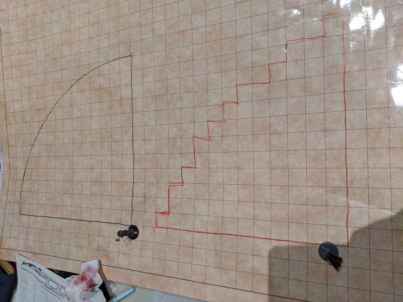
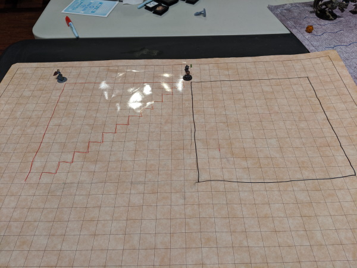
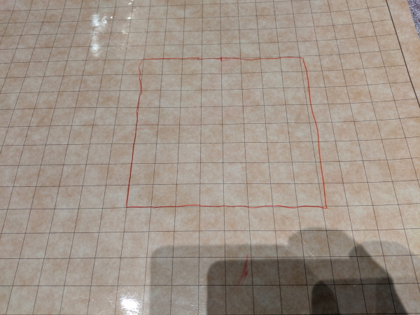
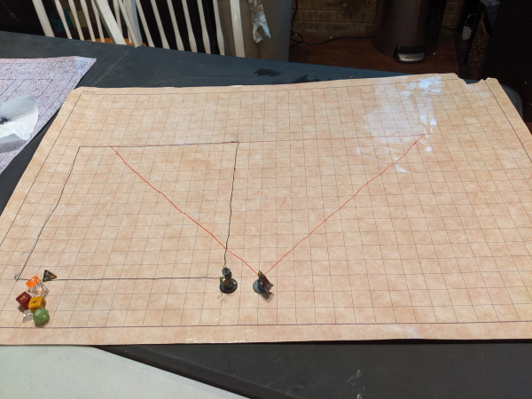

Because this is how my mind works, I woke up with the whole "Square Cones" thing on my head this morning. I know y'all said we've been doing it this way, but in this post I'm going to put forward the argument that we haven't been doing that. Then I'm going to put forward the argument that's not how it works in 5e anyway, and then I'm going to blow your mind about 5e movement in general. 🙂
So first, first let's talk about how we haven't been using the 5' diagonal rule in 5e. First, the most obvious argument is we've been using a spell template for cones which is decidedly not-square-shaped. Here's a a picture I took where I drew out a templated cone and put it next to a 4e spell template for cones.

Now, you may be thinking, "that doesn't look so bad". That 4e cone template is a pretty good rough approximation of a cone. And you're right! It is! But that's not how we "should" be doing it if we county diagonals as one square for spells. If you look at the 4e template that 60' cone goes 12 squares on the sides and only 8 squares diagonally. Ruh-roh. So what does the cone look like if we drew it out with each diagonal counting as 5'? Like this:

It's important to note that this is not, in fact, cone shaped. It's a square. This is a 60' square. Let me illustrate this further. This is a 20' radius fireball spell when we count diagonally 1:1.

In contrast, below is a spell that is a 40' cube
And finally, this is a 40' cone fired diagonally
But it gets weirder, what if instead of firing the cone diagonally, you fire it forward? Well, then it looks like this. Below are two overlapping cones, one fired diagonally, one fired forward. As you can see, both are 12 squares long both diagonally and forward.

What's really weird about this is that you end up with different shapes. One is a triangle, the other is a square. The spell shape changes based on the direction you fire it. That can't be right, can it?
No, it's not. And that's good, because we haven't been doing it that way, or at least not consistently.🙂
But now, man, I'm about to blow your mind. Because here's the thing. Not only are spells not measured so that diagonals are always 5 feet, but neither is character movement! "But wait!" I hear you say. "The removed the rule about counting double on each square when moving diagonally!" Yeah, they did. Because they removed grid combat!!! The only mention of grid combat in the PHB is as a variant rule.
VARIANT: PLAYING ON A GRID
If you play out a combat using a square grid and miniatures or other tokens, follow these rules.
Squares Each square on the grid represents 5 feet.
Speed Rather than moving foot by foot, move square by square on the grid. This means you use your speed in
5-foot segments. This is particularly easy if you translate your speed into squares by dividing the speed by 5. For
example, a speed of 30 feet translates into a speed of 6 squares.
Entering a Square. To enter a square, you must have at least 1 square of movement left, even if the square is
diagonally adjacent to the square you’re in. (The rule for diagonal movement sacrifices realism for the sake of smooth
play. The Dungeon Master’s Guide provides guidance on using a more realistic approach.)
As you can see, this is incredibly vaguely worded. It doesn't say "each square is 5', even diagonals. It says if you decide to use a grid you could translate your movement into squares and always move 5'. Now, you could totally do each one diagonal. It's not against the rules. But these are barely rules! They just read like suggestions with "ifs" and "coulds" everywhere. It's just a one paragraph suggestion about how movement could be. And, most importantly for us, it certainly doesn't say anything about spells treating each square as 5'. This paragraph is just about movement.
But it says there are more realistic rules in the DMG there at the end. Let's see what the DMG says
Optional Rule: Diagonals
The Player’s Handbook presents a simple method for counting movement and measuring range on a grid: count every square as 5 feet, even if you’re moving diagonally. Though this is fast in play, it breaks the laws of geometry and is inaccurate over long distances. This optional rule provides more realism, but it requires more effort during combat.
When measuring range or moving diagonally on a grid, the first diagonal square counts as 5 feet, but the second diagonal square counts as 10 feet. This pattern of 5 feet and then 10 feet continues whenever you’re counting diagonally, even if you move horizontally or vertically between different bits of diagonal movement. For example, a character might move one square diagonally (5 feet), then three squares straight (15 feet), and then another square diagonally (10 feet) for a total movement of 30 feet.he Dungeon Master’s Guide provides guidance on using a more realistic approach.)
So there is no actual "basic" D&D rule about movement on diagonals. One is a "variant" rule in the PHB, one is an "optional" rule in the DMG (exactly what the difference is between and optional and variant rule is an exercise left to the reader). Neither is "more" standard than the other, because the standard rule for movement and distance measuring is pure theater of the mind.
Also for what it's worth, Xanthar's recommends you just use spell templates and forget about that stuff. 🙂
So! Sorry if you sat through the whole thing. Let me do the whole "sum up my points" at the end.